Наша місія – щоб кожен українець мав можливість отримати допомогу й не залишився наодинці зі своїми проблемами

Ми хочемо допомогти кожному, хто постраждав під час війни
Підтримати фондМи допомагаємо людям, які постраждали знайти правильне лікування. У нашому фонді є чотири напрями: фізичної та реабілітаційної медицини, терапевтичне, неврологічне та хірургічне. Ми маємо заклади-партнери, де швидко та якісно можуть надати допомогу.
Діти – найвразливіша частина суспільства, і їм особливо потрібна підтримка дорослих. Тому наш фонд збирає речі для дітей, проводить літні й зимові табори, майстер-класи та за потреби – дитячих прсихотерапевтів.
Наша місія – щоб кожен українець мав можливість отримати допомогу й не залишився наодинці зі своїми проблемами

Усі ваші донати йдуть саме на роботу фонду, заробітні плати ми виплачуємо з коштів грантодавців
Якщо у вас виникають питання – телефонуйте за номером 0-987-654-321
Або пишіть нам у чат-бот